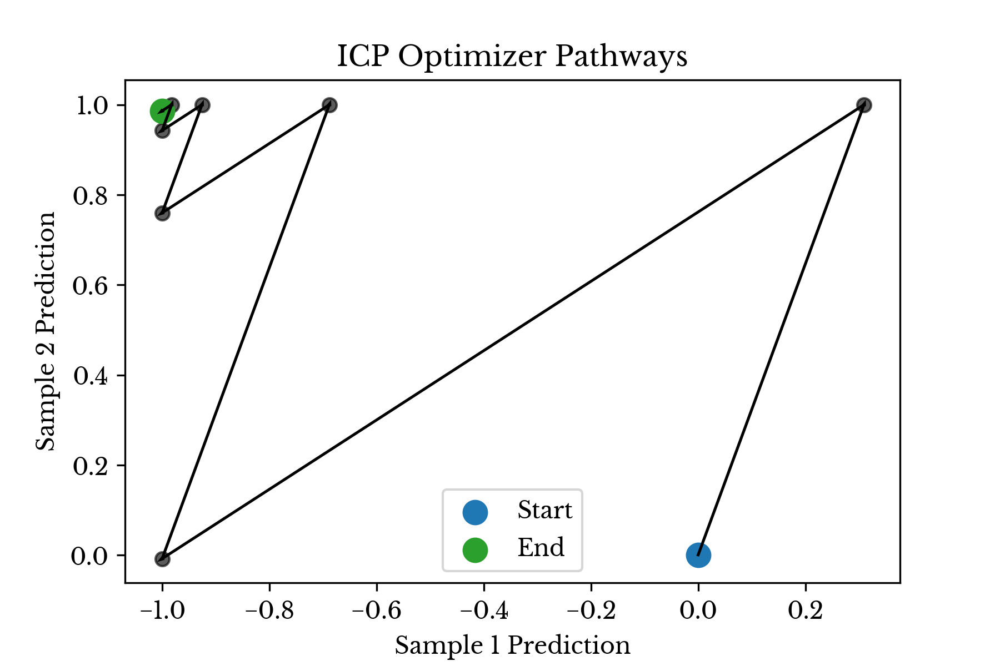
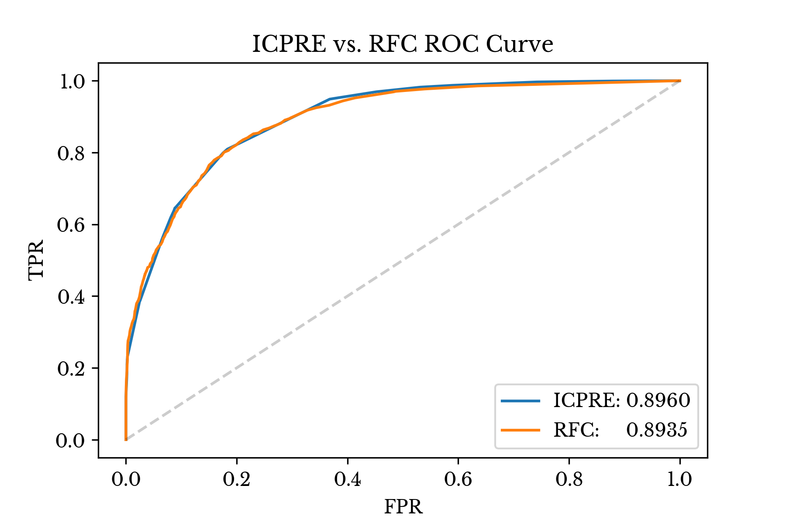

The Iterative Constrained Pathways Optimizer
Tue, 18 May 2021
Computer Science, Data Science, Machine Learning, Mathematics, Statistics
Many optimization methods seek an optimal parameter set with regard to error or likelihood. Such a solution is most desirable in many regards. However, when the broader context of a problem is included, the indisputable superiority of the optimum frequently becomes less clear. This context often includes other guidelines and restrictions that may limit the usefulness of solutions lacking certain properties. Unfortunately, typical loss criteria can rarely take these into account.
This blog post presents a method that abandons the quest for optimality and instead focuses on better satisfying the broader context of a problem. It describes a method that does not attempt to find the minimum, but instead simply tries to get closer to it while respecting imposed constraints. This blog post describes the iterative constrained pathways optimizer.
Interpretability and Human Intuition
The term interpretability frequently arises in the context of machine learning models. Interpretable models are often portrayed as being inherently superior to their opaque, black-box counterparts. And this is understandable and well-motivated in many context. Some use-cases seem especially sensitive to requirements involving explainable models. Fraud detection and automated diagnosis are two such examples that seem reasonable if not a little trite. Indeed, it is not difficult to imagine some of the problems that might arise from deploying difficult-to-understand models in these scenarios.
However, even simple models like decision trees and linear regression are not without their challenges. Collinearity, small sample size, sampling bias, noise, and other artifacts in the data are just a few of many things that can go wrong and give rise to a bizarre model.
But what, exactly, is strange about such models?
With linear models, the solution obtained is frequently the analytically optimal solution. In some purely technical sense, such a model is the perfect solution. However, in the broader context, it may be unacceptable.
The argument presented here is that this issue can frequently arise when a model clearly disagrees with the human intuition for a problem. For instance, a model which asserts that a person is likely to earn less in adulthood for each additional year of education the individual completes is likely to raise eyebrows. However, given other terms in the model and the nuances of the dataset at hand, such a result may very easily arise. And, again, a model asserting such a bold claim may very well be correct in some purely technical sense.
In this instance, an unstated requirement exists that years of education be positively correlated with the predicted response. This condition may be thought to be part of the broader context of the problem. The argument presented here is that such constraints frequently boil down to a requirement that the relationships between input variables and model responses match human intuition.
Iterative Constrained Pathways
The method presented here attempts to address the problems described in the previous section in several ways.
First, an attempt to find the intuitive direction of each relationship is made. This is accomplished by looking at the univariate correlation of each feature with the response variable. For binary variables in a classification setting, the base rate of the target class can be compared in samples where the feature is zero and where it is non-zero. In a rule ensemble model, this allows the rules to be more naturally reinforcing rather than highly entangled with one another. Alternatively, the column directions can be manually entered.
Next, interval constraints are made on the columns of the data matrix so that the coefficients of the solution adhere to the “intuitive” direction for the problem. The algorithm supports arbitrary interval constraints, but interval constraints of the form \((-\infty, 0 \rbrack\), \(\lbrack 0, \infty)\) are perhaps most interesting here.
Then, an initial guess of a solution is made. There is likely no optimal first guess for this method, so reasonable heuristics such as average log-odds, averaged signed response, or average log-probability may be employed.
Next, an iterative process begins. In this process, the algorithm chooses a column from the data matrix and attempts to move along this path such that the interval constraint on the column is still preserved. A search along this path is conducted for a magnitude which minimizes the error. As the loss function employed is convex, this search can terminate as soon as the loss along this path begins increasing. If for some reason, the loss cannot be reduced along this path, the algorithm tries another column. The algorithm continues in this way until the loss no longer decreases for any column in the data matrix. When this occurs, the algorithm terminates.
Lemma: The ICP algorithm terminates in a finite number of steps.
Proof: Assume without loss of generality that the problem is bounded by a possibly non-unique global minimum. Each step of the algorithm must decrease the value of the loss function. Since the error cannot decrease beneath the value of the global minimum and the algorithm makes progress towards the minimum at each step, the algorithm terminates in a finite number of steps. \(\blacksquare\)
It should be noted that although the algorithm makes progress towards the global minimum at each step, it may never achieve this value. In fact, the method likely rarely achieves the global minimum.
The algorithm determines the distance it can move along a path by comparing the current column coefficient with the boundaries of the feasible region. For example, if the current coefficient value is
x and the feasible region for the coefficient is \(\lbrack a, b \rbrack\), then the path search is constrained to \((0, x-a \rbrack\) in the negative direction and \((0, b-x \rbrack\) in the positive direction.
In this way, the algorithm is made to respect the constraints of the problem. Using non-negative or non-positive intervals, the optimizer may be forced to respect constraints placed on the sign of the relationship of any given column with the target value.
Figure 1 shows the behavior of the ICP solver on a dataset with two samples. In the dataset, one sample belongs to the positive class and one two the negative class. The columns in the matrix are sign constrained. In this case, the margin targeted by the algorithm is 1 and the solution obtained is
[-1., 0.98636858].

Figure 1: Iterative Constrained Pathways in Action
As can be seen, the algorithm alternates between two columns snaking its way towards a better solution.
When selecting a path, further constraints may be placed on the algorithm. For instance, constraints on the maximum number of unique pathways can be chosen. This places a hard limit on the number of features that the model may employ. If multiple columns employ the same underlying feature, they may be logically grouped together and the algorithm can be made to respect an upper limit on the number of groups that may be used.
Other arbitrary constraints such as coefficient ordering, coefficient vector norms, maximum number of iterations, or minimum step error improvement can easily be included. The mechanism is the same; either constrain the line search or abandon the current pathway and try another.
Each additional constraint can be thought of as a trade-off that sacrifices analytical error for suitability of the model in some broader context.
The ICP Rule Ensemble
One of the challenges with existing rule ensemble methods is that the signs of the rules may appear paradoxical, resulting in dubious model explanations. The ICP optimizer can perhaps help here. The argument is that by following a solution approach which more closely resembles one which humans use, a more understandable ensemble is produced. Again, the optimizer aims to produce an ensemble in which the rules are less highly entangled with collinearity and are more reinforcing in nature.
As in prediction rule ensemble (PRE), gradient boosting machines (GBM) can similarly be applied here [1]. There are many possible parameter settings, but one which produces especially transparent models occurs when the depth of each tree is limited to 1. By gathering the split criteria for each tree in the forest, a collection of rules is obtained. Next, these rules are used to form a matrix in which the
i-th row and
j-th column indicates the result of the
j-th splitting criteria evaluated against the
i-th sample.
Due to their simplicity and the behavior of the GBM algorithm, the resulting rules are likely to be collinear. However, the ICP optimizer can reduce the complexity of the model and produce a more natural final ensemble. A sign-constrained ICP solution is obtained and all rules with coefficient 0 are discarded. The remaining rules are grouped by column index and split into non-overlapping regions. The method described above is dubbed the ICP rule ensemble (ICPRE).
The ultimate rules produced by ICPRE are of the form:
if (a11 <= x1 < b11) then => score += z11
if (a12 <= x1 < b12) then => score += z12
…
if (aij <= xi < bij) then => score += zij
...
In this way, the rules identify key intervals for the features and show the impact of a given variable falling into a specific range. Depending on the dataset and the underlying data generation process, it may be difficult to truly disentangle the effects of all the variables. Nonetheless, the model at least presents a reasonable explanation and is a faithful representation of the optimization process itself.
ICP In Practice
This section showcases some of the advantages of the iterative constrained pathways algorithm. The ICP rule ensemble method is employed on several classification datasets and the results from the model are presented.
Census Income Data
The first dataset is the “adult income dataset” obtained from the University of California at Irvine [2]. The purpose of the dataset is to predict whether an individual earns more than $50,000 per year given information about the individual. Overall, the dataset might be described as being moderately difficult. Most reported accuracy measurements from models fit on the data are roughly around 85% or so.
The model finds an initial solution employing the following rules:
Age <= 28.5 -0.619637
Age <= 33.5 -0.619637
WorkingHours <= 40.5 -0.619637
IsHusband <= 0.5 -1.38036
YearsEducation > 9.5 +0.619637
YearsEducation > 10.5 +0.760726
CapGain > 5119.0 +2.0
CapGain > 7055.5 +1.38036
CapLoss > 1820.5 +1.38036
IsWife > 0.5 +1.38036
These are then consolidated into the following non-overlapping rules:
Rule 0:
-Coef: -1.380363
-Pred: (IsHusband <= 0.5)
Rule 1:
-Coef: -1.239274
-Pred: (Age <= 28.5)
Rule 2:
-Coef: -0.619637
-Pred: ((28.5 < Age) & (Age <= 33.5))
Rule 3:
-Coef: -0.619637
-Pred: (WorkingHours <= 40.5)
Rule 11:
-Coef: +0.619637
-Pred: ((9.5 < YearsEducation) & (YearsEducation <= 10.5))
Rule 12:
-Coef: +1.380363
-Pred: (10.5 < YearsEducation)
Rule 13:
-Coef: +1.380363
-Pred: (1820.5 < CapLoss)
Rule 14:
-Coef: +1.380363
-Pred: (0.5 < IsWife)
Rule 15:
-Coef: +2.000000
-Pred: ((5119.0 < CapGain) & (CapGain <= 7055.5))
Rule 16:
-Coef: +3.380363
-Pred: (7055.5 < CapGain)
Starting from rule 16, the model shows that individuals with more than $7000 in capital gains reported are very likely to earn more than $50k. Rule 15 shows that if you fall slightly short of rule 16, you are still likely to be in class 1, but the effect size is smaller. Years of education has a similar ordered effect taking place. Being under the age of 34 reduces earnings potential, but the effect becomes more pronounced under the age of 29. Overall the model appears very reasonable in terms of agreement with human intuition.
| Method |
Train |
Test |
| IPCRE |
84.65% |
84.75% |
| RFC |
99.90% |
84.32% |
Table 1: Census Income Accuracy Results
The training and validation results of the model are shown in Table 1. Table 1 also shows the results for a random forest classifier (RFC) fit on the same training and validation split. Default parameters are used for both models. The random forest uses over 1.3 million nodes while ICPRE achieves similar accuracy with essentially 21 parameters (10 split points, 10 coefficients, and 1 intercept).

Figure 2: Adult Income ROC Comparison
Figure 2 compares the ROC curves and ROC AUC scores for the two models over the validation data. Both the AUC score and the curves are nearly identical between the two models.
Automobile MPG Dataset
Next, the behavior of ICPRE is explored on the “automobile MPG” dataset from UCI [3]. The purpose of this dataset is to predict the number of miles per gallon (MPG) a car achieves, given information about the vehicle. The dataset is posed as a regression problem, however in this example it is repurposed as a classification dataset. The target value is set to a boolean variable indicating if the car achieves at least the median MPG of the dataset (23 MPG).
The initial fitting process identifies the following rules:
Cylinders <= 3.5 -3.51117
Cylinders <= 5.5 +2.75559
Displacement <= 120.5 +0.755587
Weight <= 2278.5 +1.51117
Year <= 73.5 -1.51117
Year <= 78.5 -0.755587
Displacement > 120.5 -0.755587
Displacement > 198.5 -2.0
Weight > 2764.5 -0.755587
Year > 78.5 +1.51117
Year > 79.5 +1.24441
Again, these are then consolidated into the following non-overlapping rules:
Rule 0:
-Coef: -2.755587
-Pred: (198.5 < Displacement)
Rule 1:
-Coef: -2.266760
-Pred: (Year <= 73.5)
Rule 2:
-Coef: -0.755587
-Pred: (Cylinders <= 3.5)
Rule 3:
-Coef: -0.755587
-Pred: ((120.5 < Displacement) & (Displacement <= 198.5))
Rule 4:
-Coef: -0.755587
-Pred: (2764.5 < Weight)
Rule 5:
-Coef: -0.755587
-Pred: ((73.5 < Year) & (Year <= 78.5))
Rule 8:
-Coef: +0.755587
-Pred: (Displacement <= 120.5)
Rule 9:
-Coef: +1.511173
-Pred: (Weight <= 2278.5)
Rule 10:
-Coef: +1.511173
-Pred: ((78.5 < Year) & (Year <= 79.5))
Rule 11:
-Coef: +2.755587
-Pred: ((3.5 < Cylinders) & (Cylinders <= 5.5))
Rule 12:
-Coef: +2.755587
-Pred: (79.5 < Year)
The rules show that newer cars (the dataset covers the years 1970-82) have better fuel efficiency. Again, there is a natural ordering to the coefficients with respect to year, weight, and displacement. Finally, the coefficients and their relative order appear to corroborate human intuition.
| Method |
Train |
Test |
| IPCRE |
94.97% |
95.00% |
| RFC |
100.00% |
92.50% |
Table 2: Auto MPG Accuracy Results
Table 2 shows the performance of ICPRE on this dataset. Again, a random forest fit on the same training and validation split is shown for comparison purposes. The random forest has a total of 5384 nodes while the ICPRE model has essentially 23 parameters.
It should be noted that the primary purpose of these experiments is
not to show that ICPRE is more accurate than RFC. No special tuning or cherry-picking is performed for either model, but accuracy results are obviously highly dependent on the dataset and parameters for both model types. Instead, the purpose is to demonstrate that ICP achieves performance that is in the same ballpark as existing methods while producing more explainable models.
Model Timings
Due to its dual stage process, the ICPRE fitting procedure is somewhat slower than some other methods. Rough timing results for RFC and ICPRE over both of the above datasets are shown in Table 3. The ICP optimization method is currently implemented in Python, while RFC is implemented in Cython. Random forest is also fit using 4 parallel threads, while ICP does not currently utilize multi-threading. These both likely account for some of the difference that is observed.
| Model |
Income |
MPG |
| IPCRE |
1.54s |
0.04s |
| RFC |
0.92s |
0.12s |
Table 3: Fit Timing Results
Despite the somewhat longer fitting times seen on the larger census income dataset, the method is still able to scale to large instances. In fact, the solution for a problem with over 1 million rows and 1500 columns is found in under 5 minutes. While already fairly reasonable, a C++ extension module could likely further reduce the fitting time for ICP to be more in line with other faster methods.
Challenges with ICP
There appear to be two primary challenges with the ICP model. The first is that the model is somewhat sensitive to its initial starting point. As the algorithm is constrained with respect to the directions in which it may move, it seems intuitive that certain starting positions can result in better solutions than others. As with other initialization sensitive methods, trying several initial starting values can help here.
The second issue is that the algorithm is sensitive to column traversal order. Again, as the algorithm is constrained to fixed directions, some moves my ultimately lead to a poorer final solution. This problem is somewhat more difficult to address, as finding an optimal ordering is
NP-hard. Introducing a limit on the maximum distance to move before trying a new direction helps here. This limit is akin to learning rate parameters in other methods.
In general, random column ordering with a small learning rate tends to create more complex but performant models. An alternative to purely random ordering is to cycle through the columns and swap those that reduce error ahead in the traversal strategy, so that they are encountered again sooner. The aim of this strategy is to strike a tradeoff between the complexity of a purely random ordering and the over simplicity of one performing steepest descent without a learning rate.
By defining minimum and maximum swap distances, a buffer space that constitutes an
active set is constructed. Due to the shuffling algorithm, this space contains both columns inside and outside the active set. Directions that do not reduce error are passed over, removing them from the set, while directions that reduce error are preserved. Columns in the set may also be randomly dropped due to the swapping mechanism. By using a small learning rate and a reasonable active set size, the moving average of the direction of descent is hopefully made closer to an optimal one.
Conclusion
ICP aims to produce a solution that is intuitive and corroborates human intuition for a problem. By constraining itself only to actions that are reasonable, it produces a final solution that is easier to understand than other less restricted methods. Despite these constraints, the algorithm appears to perform comparable to standard methods when evaluated on several well-known datasets. Further, the rule ensemble produced on each dataset appears to reasonably corroborate human intuition.
Using ICP
The ICP optimization method, the ICPRE algorithm, and the code for consolidating rules is all available on GitHub [4]. The latest ICP package is available via PyPi [5]. Use the command:
pip install ICPOptimize
to install ICP. For examples on how to use the
ICPOptimize package, please see the
ICPExamples GitHub repository [6].
{kind=link}
{kind=link}